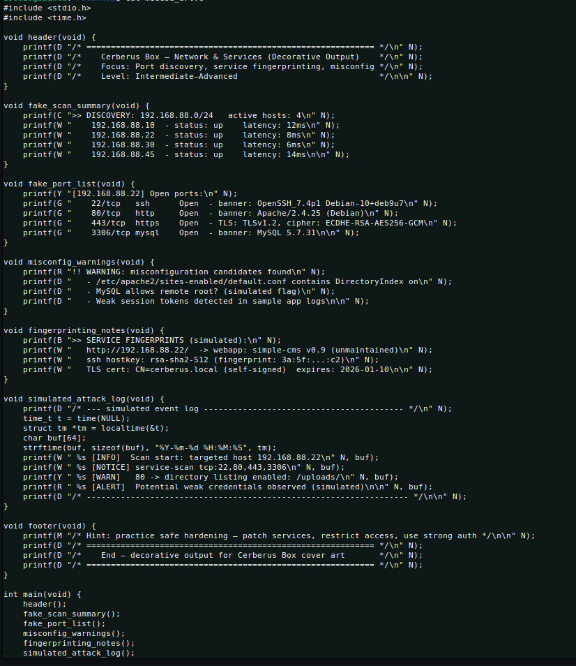
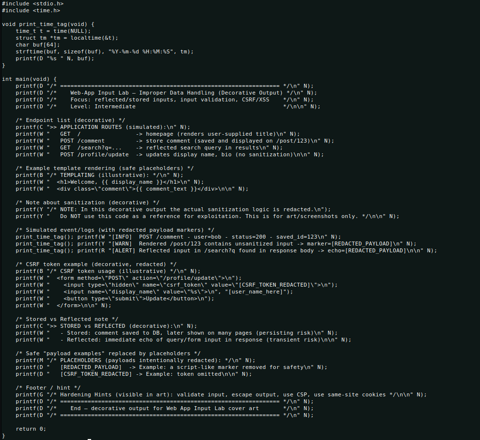

آکادمی تکنوژی های سایبری
این آکادمی جهت معرفی شاخه های مختلف امنیت سایبری و معرفی ابزار های آن به وجود آمده
همچنین این آکادمی در اختیار کاربران ماشین ها و آزمایشگاه های مختلفی برای تست امنیت و تمرین قرار میدهد
این آکادمی جهت معرفی شاخه های مختلف امنیت سایبری و معرفی ابزار های آن به وجود آمده
همچنین این آکادمی در اختیار کاربران ماشین ها و آزمایشگاه های مختلفی برای تست امنیت و تمرین قرار میدهد
امنیت سایبری دارای شاخه های مختلفی از جملهامنیت شبکه، شبکه، امنیت وب سایت ها و موارد بیشتر هست...
برای مشاهده ابزار های مختلف امنیت سایبری از جمله ابزار های اسکن و شناخت آسیب پدیری کلیک کنید.
در این بخش از سایت ما شما میتونید با استفاده از ماشین ها و آزمایشگاه های ما تمرین کنید و خود را به چالش بکشید.
Description: A challenge-focused machine targeting web application and authentication weaknesses — practice brute-force scenarios, session management flaws, and misconfigured auth. Great for learning how to detect insecure login patterns.
Focus: Authentication, Session Management
Level: Intermediate
Description: Simulates a multi-service server where port discovery, service fingerprinting, and misconfigured services are the main challenges. Ideal for network scanning and hardening practice.
Focus: Network, Services, Misconfiguration
Level: Intermediate–Advanced
Description: A web app with improper data handling and multiple reflected/stored input points — designed to practice input validation and safe testing of XSS/CSRF scenarios.
Focus: Web App, XSS, CSRF, Input Validation
Level: Beginner–Intermediate
Description: An internal administration system with complex access controls and information disclosure issues. Emphasizes privilege escalation and in-depth access auditing.
Focus: Access Control, Information Disclosure, Privilege Escalation
Level: Intermediate–Advanced
Description: A machine for binary analysis and exploit development practice (includes challenges like hardened buffer overflows). Built for those starting with reverse engineering and safe exploitation techniques.
Focus: Binary Analysis, RE, Memory Exploitation
Level: Advanced (intro to RE)
Description: Emulates a small router/firewall with flawed rules and misconfigured NAT/ACLs — a chance to learn about network misconfigs and traffic sniffing in an isolated environment.
Focus: Networking, Firewall, Router Configuration
Level: Intermediate
Description: A test database containing examples of complex SQL injection and faulty transaction handling; focuses on identifying injection types and mitigation strategies.
Focus: Databases, SQLi, Transaction Safety
Level: Beginner–Intermediate
Description: A controlled machine for capturing malicious behavior; ideal for log analysis, attacker behavior profiling, and building IDS/IPS scenarios.
Focus: Intrusion Detection, Log Analysis, Honeypot
Level: All levels (analysis-focused)